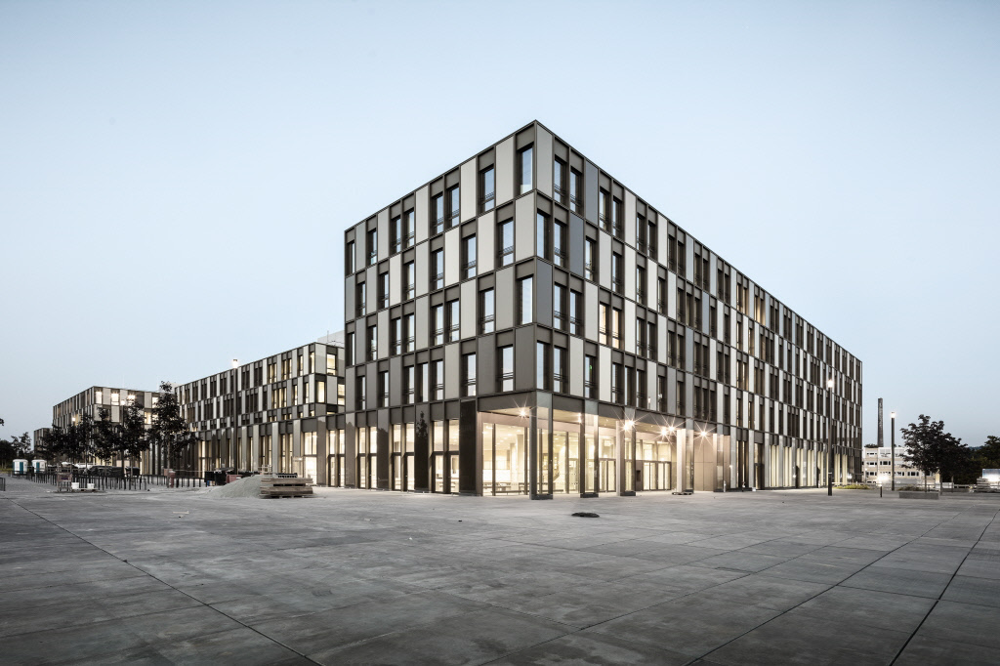
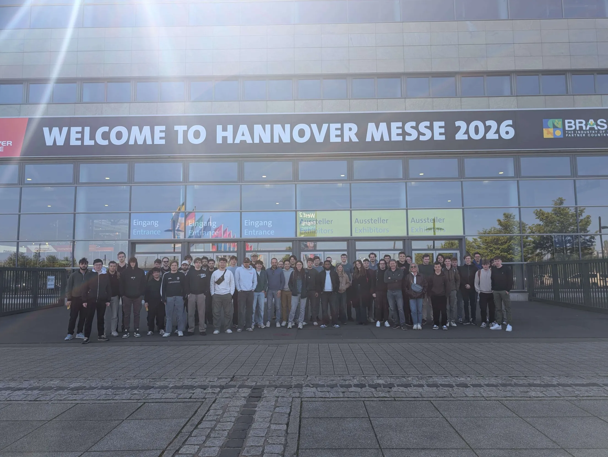
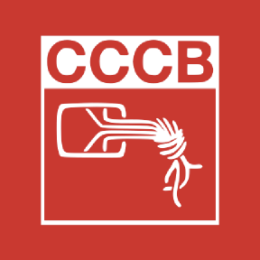
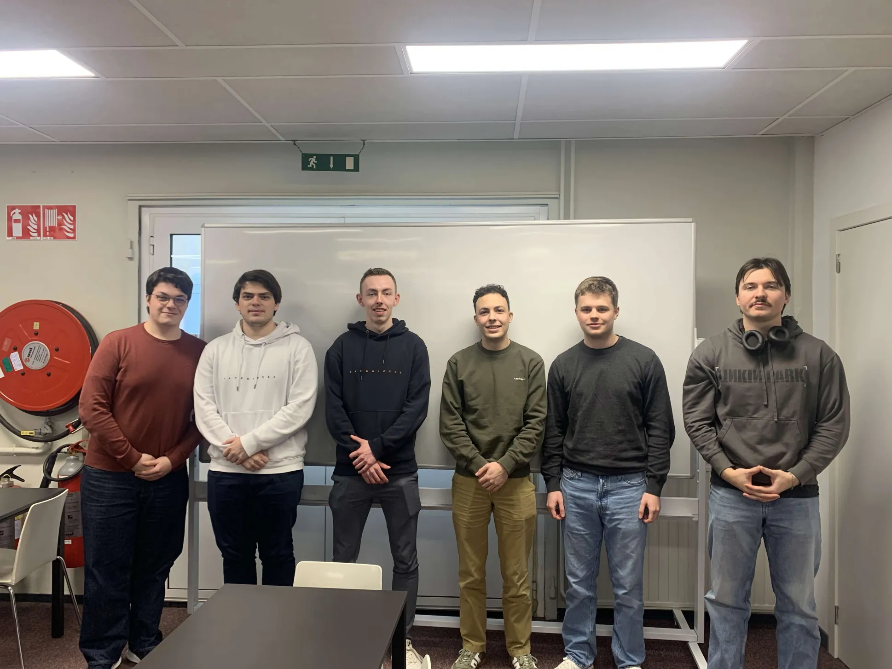

De studiereis trapte op woensdag 22 april af met een vroege busrit vanuit Diepenbeek richting Bielefeld, waar we werden ontvangen op de campus van Hochschule Bielefeld (HSBI). Deze hogeschool, opgericht in 1971, is één van de grootste hogescholen in de regio Oost-Westfalen en telt zo'n 10.500 studenten verdeeld over drie campussen in Bielefeld, Minden en Gütersloh.
Tijdens onze rondleiding over de campus kregen we een uitgebreide kennismaking met het Applied Computer Science-programma. De faculteit Engineering and Mathematics, waar informatica onder valt, huisvest meer dan 3.000 studenten in 24 bachelor- en masteropleidingen. De STEM-vakken combineren er elektrotechniek, informatica, werktuigbouwkunde, mechatronica en toegepaste wiskunde een breedte die indruk maakt.
We kregen ook te horen dat HSBI sterk inzet op internationalisering, met uitwisselingsprogramma's en partnerships met universiteiten wereldwijd. Na een boeiende paar uur op de campus trokken we door naar Detmold, een charmant historisch stadje waar we overnachtten in de Youth Hostel.
Donderdag 23 april was ongetwijfeld één van de hoogtepunten van de reis: een volledige dag op de Hannover Messe, 's werelds grootste industriebeurs. Met meer dan 4.000 exposanten uit ruim 60 landen en zo'n 130.000 bezoekers was de schaal van deze beurs overweldigend.
De beurs bood een indrukwekkend overzicht van de technologieën die de industrie van morgen vormgeven. AI en humanoïde robots domineerden de beursvloer dit jaar. Bedrijven als Siemens, ABB, Microsoft en Amazon lieten zien hoe artificiële intelligentie al concreet wordt ingezet in productielijnen. Bijzonder indrukwekkend waren de robotica-demonstraties. Voor ons als IT-studenten was het inspirerend om te zien hoe de theorie die we in de les leren, in de praktijk wordt omgezet op wereldschaal. Na deze overweldigende dag reden we door naar Magdeburg voor onze overnachting in de Youth Hostel.


Vrijdag en zaterdag brachten we door in Berlijn, de bruisende Duitse hoofdstad. Het absolute hoogtepunt voor de IT'ers onder ons was het bezoek aan de Chaos Computer Club (CCC), de grootste hackervereniging van Europa en een legendarische instelling in de wereld van digitale vrijheid en cybersecurity. De CCC werd in 1981 opgericht in West-Berlijn vanuit de overtuiging dat informatietechnologie een centrale rol zou gaan spelen in de samenleving, en is sindsdien uitgegroeid tot een invloedrijke stem in het debat over privacy, informatievrijheid en digitale burgerrechten.
De Berlijnse afdeling opereert vanuit hun hackerspace "Club Discordia" in Berlin-Mitte, waar we een rondleiding kregen en uitleg over de projecten waar leden aan gewerkt hebben. De sfeer in de hackerspace was uniek: een mix van creativiteit, rebellie en diepe technische kennis die je nergens anders vindt.
Tussendoor doken we de stad in voor een lunch bij Curry 36, de legendarische currywurstkraam aan de Mehringdamm in Kreuzberg. Al sinds 1981 is dit dé plek waar Berlijners en toeristen zij aan zij in de rij staan voor een dampende portie currywurst met krokante frieten. Het is fast food op z'n Duits.
We bezochten ook Checkpoint Charlie, de beroemde grensovergang die tijdens de Koude Oorlog het scheidingspunt vormde tussen het Amerikaanse en het Sovjetsector van Berlijn. Op deze plek stonden in 1961 Amerikaanse en Russische tanks letterlijk tegenover elkaar, een van de meest gespannen momenten uit de Koude Oorlog. Vandaag de dag herinneren het wachthuisje, de informatieborden en de historische foto's ter plaatse aan de decennialange deling van de stad. Als je daar staat en beseft dat mensen hun leven riskeerden om van Oost naar West te vluchten, komt de geschiedenis pas echt binnen. We overnachtten in het Pfefferbett Hostel, één van de best beoordeelde hostels van Berlijn, perfect gelegen om de stad te verkennen.
Zondag 26 april was het tijd om terug te keren naar België. Met een hoofd vol inspiratie en indrukken van de hogeschool in Bielefeld, de overweldigende technologiebeurs in Hannover, tot de hackerscultuur en bruisende energie van Berlijn. Een studiereis om niet snel te vergeten.
De studiereis naar Duitsland heeft me op meerdere niveaus aan het denken gezet over mijn eigen ontwikkeling, zowel op professioneel als persoonlijk vlak. Wat mij vooral opviel tijdens het bezoek aan de Hochschule Bielefeld, was hoe breed en interdisciplinair het domein van IT eigenlijk is. De combinatie van informatica met andere technische richtingen zoals mechatronica en elektrotechniek liet me inzien dat ik mijn blikveld misschien nog te beperkt hield. Ik besef nu dat er veel meer mogelijkheden zijn binnen mijn studie dan ik oorspronkelijk dacht, en dat het belangrijk is om open te staan voor andere disciplines en nieuwe, waardevolle inzichten.
De dag op de Hannover Messe was voor mij een echte eyeopener. Het zien van artificiële intelligentie en robotica in een realistische industriële context maakte duidelijk hoe relevant en krachtig de theorie is die we op school leren en toepassen.
Het bezoek aan de Chaos Computer Club in Berlijn vond ik bijzonder interessant en uniek. De manier waarop daar wordt nagedacht over technologie, vrijheid en veiligheid gaf mij een ander perspectief op IT. Het was verfrissend om te zien hoe kritisch en onafhankelijk er met technologie wordt omgegaan, wat me aanzette om zelf ook meer bewust na te denken over de bredere impact van IT.
Tot slot heeft deze reis mij ook persoonlijk doen groeien. Het samen reizen, nieuwe omgevingen ontdekken en uit mijn comfortzone stappen, hebben mijn zelfstandigheid en sociale vaardigheden duidelijk versterkt. Ik kijk terug op deze ervaring als een belangrijk en waardevol moment in mijn opleiding dat mij richting geeft voor de toekomst.

De PXL Hackathon, georganiseerd in samenwerking met PXL Smart ICT, draaide rond het project OpenInzicht. Dit project is ontwikkeld met een maatschappelijke focus en richt zich op mensen die leven met zogenoemd "onzichtbaar lijden". Dit zijn aandoeningen en situaties die niet altijd direct zichtbaar zijn voor de buitenwereld, maar wel een grote impact hebben op het dagelijkse leven van de betrokken personen. Voorbeelden hiervan zijn chronische cholesterolproblemen, depressie en andere fysieke of mentale gezondheidsuitdagingen.
Het centrale doel van OpenInzicht is om deze mensen een digitaal platform te bieden waar zij hun persoonlijke verhaal kunnen delen. Het platform is ontworpen als een veilige en toegankelijke omgeving waarin gebruikers hun ervaringen kunnen uitdrukken zonder oordeel. Naast het delen van verhalen is er ook een sociale component aanwezig, gebruikers kunnen connecties leggen met anderen die gelijkaardige ervaringen hebben. Dit stimuleert herkenning, steun en een gevoel van verbondenheid tussen mensen die anders mogelijk geïsoleerd zouden blijven met hun problemen.
Tijdens de hackathon lag de focus specifiek op het uitbreiden van dit platform met een artificiële intelligentie-functionaliteit. Het doel van deze AI-functionaliteit was om het schrijven van persoonlijke verhalen eenvoudiger en toegankelijker te maken voor gebruikers. Niet iedereen vindt het namelijk gemakkelijk om gevoelens, ervaringen en persoonlijke situaties in tekst om te zetten. Daarom werd gezocht naar een oplossing die dit proces kan ondersteunen en structureren.
De gekozen oplossing bestond uit een systeem waarbij gebruikers eerst een gestructureerde vragenlijst invullen. Deze vragenlijst is ontworpen om belangrijke elementen van hun verhaal te verzamelen, zoals hun achtergrond, de aard van hun situatie, emoties die ze ervaren en eventuele gevolgen in het dagelijks leven. Op basis van de antwoorden in deze vragenlijst wordt vervolgens automatisch een coherent verhaal gegenereerd.
Voor het genereren van deze teksten werd gebruikgemaakt van Gemini Flash, een AI-model dat bekendstaat om zijn snelheid en lage kost. De keuze voor dit model was bewust gemaakt in functie van de context van een hackathon en de verwachte toepassing. Omdat de oplossing snel moet kunnen reageren en mogelijk op grote schaal gebruikt wordt binnen een platform, was een efficiënt en kosteneffectief model noodzakelijk. Gemini Flash bood hierbij een geschikte balans tussen prestaties en rekenkost.
Het ontwikkelproces vond plaats gedurende een periode van twee dagen, wat typerend is voor een hackathon. In deze korte tijd moesten teams niet alleen een concept uitwerken, maar ook een werkende prototype bouwen en presenteren. Binnen ons team werd er intensief samengewerkt, waarbij taken werden verdeeld op basis van individuele sterktes zoals ontwikkeling, AI-integratie, UI/UX-ontwerp en logica voor de vragenlijststructuur.
De samenwerking was een belangrijk onderdeel van het proces, aangezien de beperkte tijdsduur snelle beslissingen en efficiënte communicatie vereiste. Het resultaat was een functioneel concept waarin technologie en maatschappelijke meerwaarde samenkomen. Door de combinatie van een gestructureerde vragenlijst en AI-gestuurde tekstgeneratie wordt de drempel voor gebruikers verlaagd om hun verhaal te delen, wat de kernmissie van OpenInzicht versterkt.
Samengevat richtte deze hackathon zich niet enkel op technologische innovatie, maar ook op sociale impact. De uitgewerkte oplossing toont hoe artificiële intelligentie kan worden ingezet om menselijke expressie te ondersteunen en toegankelijker te maken voor een breder doelpubliek.
De PXL Hackathon rond het project OpenInzicht was een intensieve maar leerzame ervaring waarin zowel technische als maatschappelijke aspecten samenkwamen. Het doel van het project, het ondersteunen van mensen met onzichtbaar lijden via een digitaal platform, gaf extra betekenis aan de opdracht en zorgde ervoor dat de focus verder ging dan enkel technische implementatie. Ik heb dit project gekozen om in mijn portfolio op te nemen omdat het mijn eerste hackathon-ervaring was en omdat het een duidelijke maatschappelijke meerwaarde had.
Tijdens de hackathon heb ik vooral inzicht gekregen in hoe belangrijk het is om een duidelijk probleem eerst goed te analyseren voordat er een oplossing wordt gebouwd. Het werken met een gestructureerde vragenlijst als basis voor AI-gegenereerde verhalen toonde aan dat kwaliteit van input een directe invloed heeft op de output van het systeem. Dit maakte duidelijk dat AI-toepassingen niet enkel afhangen van het model zelf, maar ook sterk van de manier waarop gebruikersdata wordt verzameld en verwerkt.
Daarnaast was de keuze voor Gemini Flash interessant vanuit een praktisch standpunt. De afweging tussen prestaties, snelheid en kost leerde mij dat technologische keuzes vaak contextgebonden zijn en niet enkel gebaseerd worden op theoretische sterkte. In de context van de hackathon speelde prijs en snelheid een grote rol.
De samenwerking binnen het team verliep gestructureerd, waarbij taakverdeling essentieel was om binnen de beperkte tijd een werkend prototype te realiseren. Dit benadrukte het belang van communicatie en duidelijke afspraken onder tijdsdruk.
Globaal gezien heeft deze hackathon mijn inzicht in AI-toepassingen en teamgericht ontwikkelen versterkt. Het project maakte duidelijk hoe technologie kan bijdragen aan het verlagen van drempels voor zelfexpressie en sociale verbinding, wat de meerwaarde van het eindresultaat onderstreept.
Tijdens onze POP-sessie kregen we uitleg over de piramide van Lencioni, een model dat ons leerde wat een groep onderscheidt van een echt team. Lencioni stelt dat een team pas tot resultaten komt wanneer de onderliggende sociaal lagen (vertrouwen, productieve conflicten, betrokkenheid en gezamenlijke verantwoordelijkheid) stevig zijn ingevuld. Pas dan kan een team echt boven zichzelf uitstijgen en meer bereiken dan de som van de individuele bijdragen. Na de theoretische kadering hebben we met ons research project team het teamhuis ingevuld, een oefening die ons dwong om bewust stil te staan bij waar we als team staan, wat onze sterktes zijn en waar we nog kunnen groeien.
Bij het invullen van de fundering kwam meteen naar voren hoezeer Lencioni's idee van vertrouwen als basis bij ons resoneerde. We benoemden zaken zoals oprechtheid, openheid en duidelijke afspraken als wat we elk nodig hebben om op elkaar te kunnen bouwen. In het luik 'kracht' brachten we ieders talenten samen, waarbij we merkten dat onze diversiteit aan kwaliteiten van structureel denken tot creatief brainstormen elkaar mooi aanvult. De luiken 'verbinding' en 'uitdaging' lieten ons nadenken over hoe we informele momenten en successen kunnen vieren, en over welke groeikansen we als team willen aangrijpen.
Na het invullen van het teamhuis volgden drie teambuilding-oefeningen die de theorie meteen tastbaar maakten. De eerste oefening was een verticaal gespannen net met gaten van verschillende groottes. We moesten er allemaal doorheen zonder het net aan te raken en zonder hetzelfde gat tweemaal te gebruiken.
De tweede oefening was een levende versie van Jenga. Houten balken genummerd van 1 tot 6 lagen als een toren, en we moesten ze in de juiste volgorde herschikken terwijl we er zelf bovenop stonden zonder de grond te raken. Eerst moesten we letterlijk en figuurlijk ons evenwicht vinden, maar daarna verliep het verrassend vlot. Er waren een paar close calls, maar we hebben de opdracht succesvol afgerond. Hier kwam Lencioni's notie van betrokkenheid en gezamenlijke verantwoordelijkheid sterk naar voren: niemand kon zich permitteren om af te haken, want letterlijk iedereen droeg het gewicht van de groep. Het was ook een mooi voorbeeld van hoe productieve discussies over wie waar moest staan, in welke volgorde we zouden bewegen ons sneller bij een oplossing brachten dan kunstmatige harmonie ooit had gedaan.
De derde oefening was het optillen van een stok die op de grond lag, waarbij we hem alleen langs onder mochten ondersteunen en iedereen hem voortdurend moest blijven aanraken. We moesten dus samen even snel rechtkomen en hem in perfecte synchroniciteit omhoog tillen. Deze oefening vroeg om subtiele afstemming en vertrouwen, exact de elementen die Lencioni op de basis van zijn piramide plaatst. Zonder vertrouwen in elkaars beweging en zonder duidelijke onderlinge communicatie was het simpelweg onmogelijk om de stok recht omhoog te krijgen.
Deze POP-sessie heeft ons niet alleen als groep sterker gemaakt, maar gaf me ook individueel inzicht in mijn rol binnen een team. Kortom een leerzame en leuke ervaring die ons als research project team een stap dichter bij echt teamwerk heeft gebracht.
Tijdens deze POP-sessie heb ik op een waardevolle manier kennisgemaakt met de piramide van Lencioni, een model dat me een nieuw kader gaf om naar teamwerk te kijken. Wat me persoonlijk het meest is bijgebleven, is het inzicht dat een team niet zomaar ontstaat door mensen samen te zetten rond een gemeenschappelijk doel. De onderliggende lagen, vertrouwen, productieve conflicten, betrokkenheid en gezamenlijke verantwoordelijkheid, moeten eerst stevig staan voordat resultaten haalbaar worden. Dat besef heeft me doen nadenken over hoe ik zelf in groepswerk sta, en ook over hoe ik soms te snel naar resultaten wil springen zonder die fundering bewust te leggen.
Bij het invullen van het teamhuis met mijn research project team werd voor mij duidelijk hoeveel verschillende kwaliteiten er rond de tafel zaten. En dit gaf het vertrouwen dat we als team meer kunnen bereiken dan we aanvankelijk dacht.
De drie teambuilding-oefeningen maakten de theorie meteen tastbaar. Bij de netoefening leerde ik dat we de problemen, in dit geval de verschillende gaten, slim moesten verdelen op basis van wie wat aankon. Bij de levende Jenga voelde ik letterlijk wat gezamenlijke verantwoordelijkheid betekent, één verkeerde beweging en de hele groep zou vallen. Die fysieke afhankelijkheid maakte abstracte begrippen plots heel concreet. De stokoefening tot slot leerde me het meest over geduld en afstemming. We moesten echt vertragen, naar elkaar luisteren en op elkaars beweging afstemmen, iets waar ik in drukke werkmomenten te weinig tijd voor neem.
Wat ik vooral meeneem uit deze sessie, is dat ik bewuster wil investeren in de basis van een team voordat we de top van de piramide nastreven. Deze POP-sessie was voor mij niet alleen een leuke ervaring, maar ook een herinnering dat goed teamwerk vraagt om bewuste keuzes en aandacht voor de mens achter de taak.